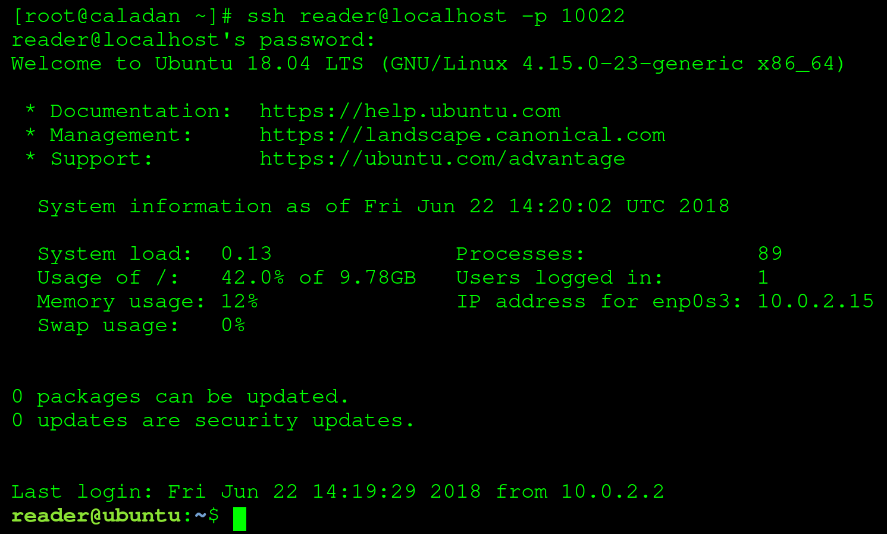

Minishell
A mini shell for Linux and Unix systems. It is a simple shell that can be used to execute commands and scripts.

Philosophers
The famous dining philosophers problem implemented by mutli-threading in c. It is a classic problem that is used to test the performance of multi-threading in a program.